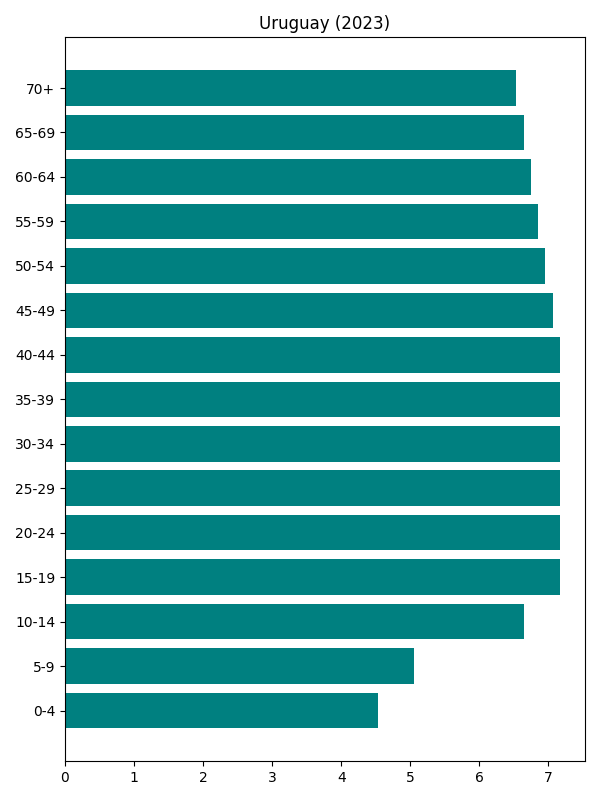
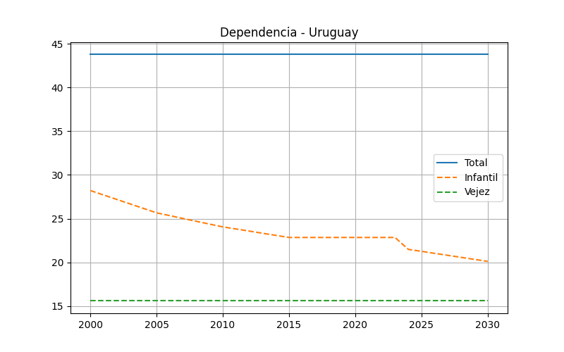

Uruguay (URY)
Pirámide Poblacional

Tendencia Dependencia

Histórico y Proyección
| Año | Pob (M) | Dependencia (%) | Esperanza Vida |
|---|---|---|---|
| 2000 | 3.32 | 43.78 | 75.0 |
| 2001 | 3.32 | 43.78 | 75.26 |
| 2002 | 3.32 | 43.78 | 75.52 |
| 2003 | 3.32 | 43.78 | 75.78 |
| 2004 | 3.32 | 43.78 | 76.04 |
| 2005 | 3.32 | 43.78 | 76.3 |
| 2006 | 3.33 | 43.78 | 76.5 |
| 2007 | 3.34 | 43.78 | 76.7 |
| 2008 | 3.35 | 43.78 | 76.9 |
| 2009 | 3.36 | 43.78 | 77.1 |
| 2010 | 3.37 | 43.78 | 77.3 |
| 2011 | 3.38 | 43.78 | 77.5 |
| 2012 | 3.39 | 43.78 | 77.7 |
| 2013 | 3.41 | 43.78 | 77.9 |
| 2014 | 3.42 | 43.78 | 78.1 |
| 2015 | 3.43 | 43.78 | 78.3 |
| 2016 | 3.43 | 43.78 | 78.3 |
| 2017 | 3.43 | 43.78 | 78.3 |
| 2018 | 3.43 | 43.78 | 78.3 |
| 2019 | 3.43 | 43.78 | 78.3 |
| 2020 | 3.43 | 43.78 | 78.3 |
| 2021 | 3.43 | 43.78 | 78.3 |
| 2022 | 3.43 | 43.78 | 78.3 |
| 2023 | 3.43 | 43.78 | 78.3 |
| 2024 | 3.46 | 43.78 | 79.14 |
| 2025 | 3.47 | 43.78 | 79.3 |
| 2026 | 3.47 | 43.78 | 79.45 |
| 2027 | 3.48 | 43.78 | 79.6 |
| 2028 | 3.49 | 43.78 | 79.75 |
| 2029 | 3.49 | 43.78 | 79.9 |
| 2030 | 3.5 | 43.78 | 80.05 |